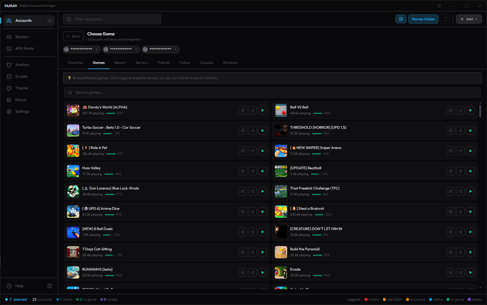

MultiAlt / Guides
How to play multiple Roblox accounts at once
Roblox only lets one client run at a time out of the box. With MultiAlt, a free and open-source account manager for Windows, you can keep every account signed in and open as many Roblox windows as your PC can handle, all in the same server if you want.
Updated October 4, 2026 · Windows 10 and 11
What you need
- A Windows 10 or 11 PC. Each extra Roblox client uses roughly the memory and CPU of one more game, so plan on what your machine can run.
- The accounts you want to play on: your main and your alts.
- MultiAlt, the free installer (.msi). It installs for your Windows user only, doesn’t ask for administrator rights and updates itself.
Step 1: Install MultiAlt
Download the .msi from the download section (it comes straight from the project’s GitHub releases) and open it. There’s no .NET or Visual C++ runtime to install first.
Step 2: Add your accounts
Click Add on the accounts screen. There are four ways in:
- Browser login: sign in on the real Roblox page inside the app.
- Cookie: paste a
.ROBLOSECURITYcookie you already have. - User and password: one or many, as
user:passlines. - Old RAM file: import the account file from the original Roblox Account Manager.
Accounts are saved encrypted on your PC, with your password or with a key tied to that computer. They stay signed in, so you don’t have to log out of one account to play on another.

Step 3: Turn on Multi Roblox
Close every Roblox window first. Then go to Settings → General and turn on Multi Roblox. That’s the switch that lets more than one Roblox client run at the same time.
Why it’s off by default: Roblox’s anti-cheat team has said that running several clients may be treated as suspicious behavior. MultiAlt leaves the choice to you. Turn it on at your own risk, and check the rules of the games you play, since some of them forbid alt accounts.
Step 4: Send the accounts into a game
- Select the accounts you want to play on (click, Ctrl+click or Shift+click).
- Open Choose game and pick a game from your favorites, recent games, a search, or paste any Roblox link: a game, a private server, a share link or an invite.
- Click Join. Multi Launch opens one account at a time, a few seconds apart so Roblox doesn’t throw a CAPTCHA at you, and the Session panel shows each one as it gets in. You can cancel the queue at any point.

Keep the group in the same server
The Servers tab scans the game’s public servers and picks one where everyone fits. “Best fit” chooses the fullest server that still has room for the whole group, so nobody ends up in a different lobby. You can also prefer emptier servers, a random one, or a specific region. Want to join a friend instead? The Friends tab shows each account’s online friends, and Follow sends the group to whatever server a player is in.
Keep every account in the game
Roblox kicks idle players after about 20 minutes. MultiAlt has two ways to deal with that:
- AFK mode presses a key or clicks in each Roblox window every few minutes, so accounts stay right where they are.
- Auto Rejoin closes and reopens your alts on a timer, with live status for each one. Your main accounts are never touched.
A watcher can also close a client that lost connection or is running out of memory.
Running many clients on one PC
- Under Settings → Optimization, cap the FPS, lower graphics and set CPU priority and memory limits, with separate profiles for mains and alts.
- Arrange every Roblox window in a grid across the monitors you choose.
- Close what you don’t need: each client is a full copy of the game.
Common questions
Is it free?
Yes. No paid tier, no ads and no account to create. MultiAlt is open source under GPL-3.0.
Can I get banned for using several accounts?
The manager doesn’t break Roblox’s Terms of Service, but some games forbid alt accounts, and Roblox has said multiple clients may look suspicious. Read the rules of the game you play.
Does it work on Mac?
Not yet. macOS support is partial and there’s no Mac download for now.
Is it safe?
See Is MultiAlt safe? for what the app does with your accounts, why some antivirus tools flag game launchers, and how to check the download yourself.
More: MultiAlt home · Is MultiAlt safe? · Português · Español